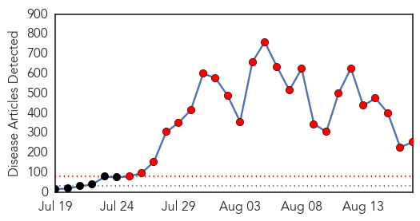
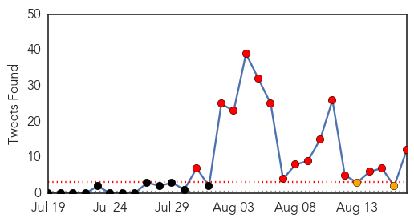
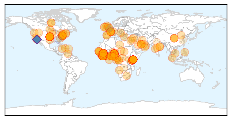
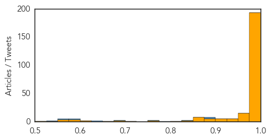

Toggle navigation
Early Warning
Daily Alerts
Ebola
Aug 17, 2014
Compare to:
-
Dengue Fever
Hemmorhagic Fever
Mold/Fungal Infection
Influenza
Meningitis
Pertussis / Whooping Cough
Middle East Respiratory Syndrome
Cholera
Hepatitis
Chikungunya
Yellow Fever
Bubonic Plague
West Nile Virus
Swine Flu
Measles
Unknown
Mumps
30 Day Trends
Web: 24
alerts
, 0
warnings
Twitter: 15
alerts
, 2
warnings
Top Articles:
Showing top 50 articles...
1.000
Turks are not fully informed about Ebola outbreak
1.000
Mauritania says suspected Ebola case unconfirmed
1.000
Ebola Fears Heighten In Liberia As Clinic Looted
1.000
Five Things Africa Must Learn From The Ebola Outbreak
1.000
NH health officials briefed on recognizing symptoms of Ebola
1.000
Suspected Ebola Patient from Nigeria Tested in Spanish Hospital, Articles
1.000
Ebola Spurs Nigeria Surveillance, Border Limits Through Region
1.000
Ebola emergency
1.000
Liberia expands Ebola treatment
1.000
Patients reported missing after Ebola clinic attacked in Liberia
1.000
United States fingered in Ebola spread
1.000
Man in Alicante tests negative for Ebola symptoms
1.000
Another Ebola problem: Finding its natural source
1.000
Kenya Shuts Borders To Ebola-Hit West African Countries : The Two-Way : NPR
1.000
Another Ebola problem: Finding its natural source
1.000
Ebola clinic looted -- NationNews Barbados -- Local, Regional and International News nationnews.com
1.000
Ebola patients escape Liberian clinic amid attack by gangsters - Africa
1.000
Ebola outbreak: Nigeria places 200 people under surveillance
1.000
Armed Men Raid Liberia Ebola Quarantine Center
1.000
Ebola outbreak: Fears as 'at least 20' patients flee Liberia quarantine clinic after protesters break down door and loot building
1.000
Ebola Protesters Storm Liberia Health Centre Heightening Infection Fears
1.000
Ebola and the economics of fear
1.000
Kotoka Airport steps up Ebola preventive measures
1.000
152 New cases of Ebola recorded in two days - WHO
1.000
Ebola-hit states plead for more help, WHO rebuked for slow response
1.000
Liberia: Ebola fears rise as clinic is looted
1.000
Liberia expands Ebola treatment in capital
1.000
Ebola patients flee attack on Liberian isolation ward as Nigerian man in Alicante tested
1.000
UPDATE: S.Africa tests possible Ebola victim
1.000
Report: Armed men attack Liberia Ebola clinic, freeing patients
1.000
Ebola clinic looted by Liberian slum residents
1.000
Ebola clinic looted by Liberian slum residents
1.000
Liberia quarantine creates 'plague villages' at Ebola epicentre
1.000
Ebola spurs Nigeria surveillance, border limits through region
1.000
The Spread Of Ebola In West Africa
1.000
The Spread Of Ebola In West Africa Is Deeply Troubling For The Region And The World
1.000
Kenya Announces Border, Flight Restrictions to Prevent Ebola
1.000
Another Ebola problem: Finding its natural source
1.000
Kenya Shuts Borders To Ebola-Hit West African Countries
1.000
Kenya bans travellers from 3 Ebola hit nations
1.000
Ethiopia denies claims Ebola case was detected
1.000
Another Ebola problem: Finding its natural source
1.000
Ebola: India quarantines Nigerian kid, grandfather, one other
1.000
Kenya Shuts Borders To Ebola-Hit West African Countries
1.000
#Kenya bars travellers from Ebola-hit nations
1.000
Guinea declares public health emergency over Ebola
1.000
Liberia: Ebola fears rise as clinic is looted
1.000
Kenya bars travel to and from Ebola stricken West Africa
1.000
Armed men loot Ebola isolation ward in Liberia
1.000
How Ebola works, and how to protect against it
Top Tweets:
0.880
End Ebola Now informational PSA for the West African region - please watch and share
https://t.co/VLPIbUdvn5
endebolanow ebola
0.880
End Ebola Now PSA for the West African region-please watch and share
https://t.co/VLPIbUdvn5
endebolanow ebola
0.880
End Ebola Now PSA for the West African region - please watch and share
https://t.co/VLPIbUdvn5
endebolanow ebola
0.846
End Ebola Now informational PSA for the West African region - please watch and share
0.788
Please watch and share our informational Ebola PSA.
https://t.co/VLPIbUdvn5
endebolanow ebola msf who
0.768
RT: Ebola is serious but preventable. Please don't don't stigmatize us WE ALL DONT HAVE EBOLA stopebola14
0.697
Look for tweets from CDC staff on the ground in W. Africa about their efforts to control Ebola outbreak. They’ll use hashtag CDCintheField
0.645
RT: Most infections from Ebola are linked to traditional funeral practices or the unprotected care of an infected person showing symp…
0.634
RT: Liberia fears Ebola could spread after residents raid quarantine center take blood-stained sheets and mattresses. http…
0.585
RT: Liberia Guinea and Sierra Leone seem to have been left to their own devices. Which sadly are few. Ebola
0.571
Don't forget to watch/share our PSA about Ebola prevention. ebola endebolanow
https://t.co/VLPIbUdvn5
@MSF_USA
0.544
RT: MSF: “Response to West Africa Ebola Epidemic Remains Dangerously Inadequate”
http://t.co/5j6VrCw3GR
Web/News Articles

Tweets

Article Locations

Article Confidences
